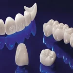
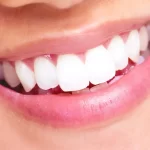
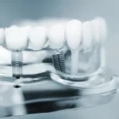

- رتبه اول برد تخصصی کشور
- فارق التحصیل دکترای عمومی دندان پزشکی از دانشگاه شهیدبهشتی
- فارق التحصیل رشته پروتزهای دندانی و ایمپلنت از دانشگاه آزاد تهران


روکش ایمپلنت
روکشی که از ایمپلنت پشتیبانی میکند شبیه یک روکش دندان معمولی است، اما به جای دندان ….

روکش دندان
روکشهای دندانی از دیرباز راه حلی برای بازیابی ظاهر و عملکرد دندان آسیبدیده بوده است.

بلیچینگ
بلیچینگ روشی ایمن، سریع و بسیار مؤثر برای سفید کردن دندانهای شما است.

لیفت لثه
لیفت لثه زیبایی اغلب روی لثههای اطراف دندانهای جلویی یا دندانهای بالایی اعمال میشود.


لبخند طلایی شما

پروتز متحرک
استفاده از پروتزهای متحرک دندان امکان ترمیم قوس دندانی را در صورت بیدندانی کامل یا جزئی …
پروتز ثابت
پروتز ثابت دندان یک وسیله مصنوعی سفارشی با یک یا چند دندان است که برای جایگزینی دندانهای …
اوردنچر
اوردنچر روشی جدیدتر برای جایگزینی دندان برای بیمارانی است که تمام دندانهای خود را از …
طراحی لبخند
در روش طراحی لبخند سه بعدی، دندانپزشک با استفاده از عکاسی استودیویی با وضوح بالا و …

من در 51 سالگی تمامی دندان های فک بالا رو از دست داده بودم. با دکتر محمد محمدی آشنا شدم و روکش مبتنی بر ایمپلنت را پیش ایشون انجام دادم. علاوه بر اینکه ظاهر دندون هام خیلی خوب شده، راحت غذا میخورم و روکشم جابجا نمیشه. از همه مهم تر دچار عفونت هم نشدم.
علی رضا مددی
من 65 سالم هست. مجبور بودم دندان های هر دو فکم رو بکشم و کاملا بی دندان بودم. دکتر محمد محمدی درمان بی دندانی کامل دو فکم رو با روکش های تمام سرامیکی زیرکونیا مبتنی بر ایمپلنت انجام دادند. که اباتمنت هارو با کامپیوتر طراحی کردند. از بابت هزینه هایی که انجام دادم پشیمون نیستم.
احمد اخلاقی
من با اینکه جوان هستم ولی دچار بیماری لثه شدم و تمام دندانهامو از دست دادم. این وضعیت تو روحیه ام خیلی تاثیر بدی گذاشت. تا اینکه دکتر محمد محمدی رو بهم معرفی کردند. دکتر محمدی روکش تمام سرامیکی زیرکونیا مبتنی بر ایمپلنت رو برام انجام دادند. و الان واقعا خوشحالم.
مرجان محمدی
من با اینکه جوان هستم ولی دچار بیماری لثه شدم و تمام دندانهامو از دست دادم. این وضعیت تو روحیه ام خیلی تاثیر بدی گذاشت. تا اینکه دکتر محمد محمدی رو بهم معرفی کردند. دکتر محمدی روکش تمام سرامیکی زیرکونیا مبتنی بر ایمپلنت رو برام انجام دادند. و الان واقعا خوشحالم.
مرجان محمدی

آرشیو مقالات

بهترین دکتر ایمپلنت دیجیتال در تهران
انتخاب بهترین دکتر ایمپلنت دیجیتال در تهران بسیار سخت است و وابسته به نیازها و ترجیحات شخصی
بهترین رنگ روکش دندان
رنگ روکش دندان شامل رنگ A که مایل به قهوهای است، رنگ B که مایل به زرد
اوردنچر
روش مدرنتر جایگزینی دندان برای بیدندانی کامل با پشتیبانی ایمپلنت.
طراحی لبخند
طراحی لبخند سهبعدی با عکاسی حرفهای و تحلیل فرم چهره و دندانها.

دکتر محمد محمدی
دکتر محمد محمدی دندانپزشک و متخصص پروتزهای دندانی و
ایمپلنت، رتبه اول بورد تخصصی کشور

راه های ارتباط

آدرس مطب
تهران، خیابان دولت، خیابان نعمتی، ساختمان نگین
کیکاووس، پلاک1،
طبقه4، واحد8

تلفن مطب
۰۲۱۲۶۶۰۶۴۸۳